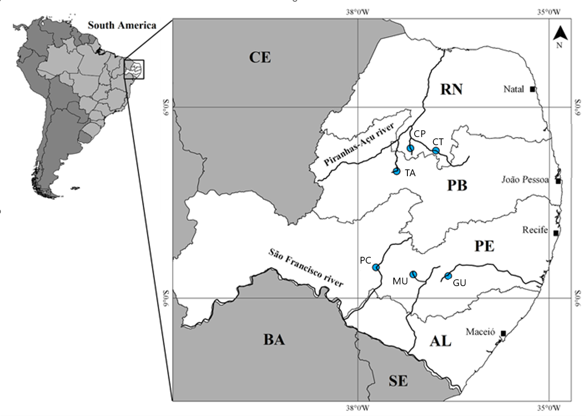
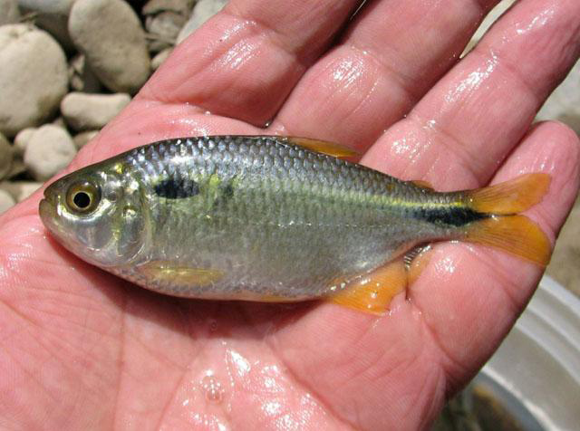
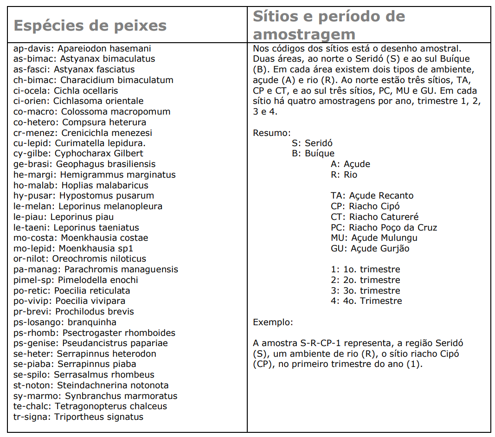
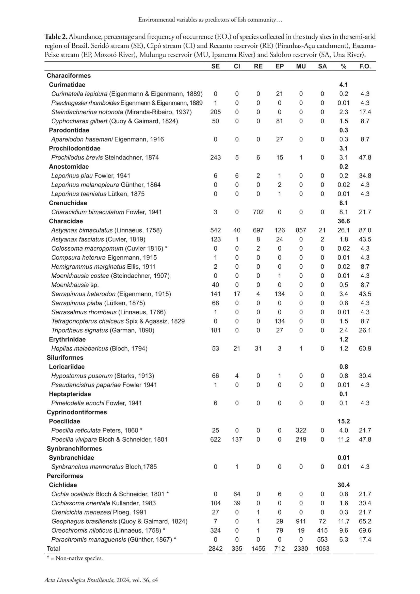
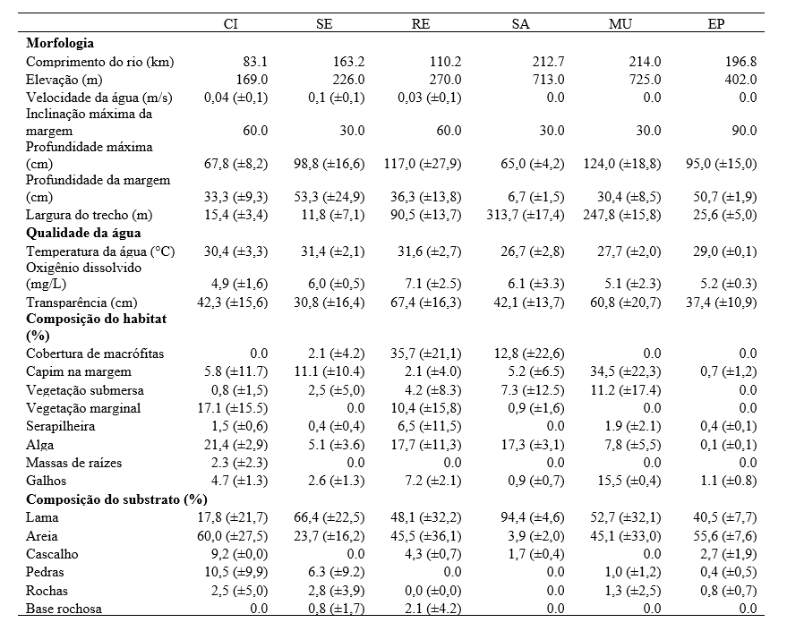
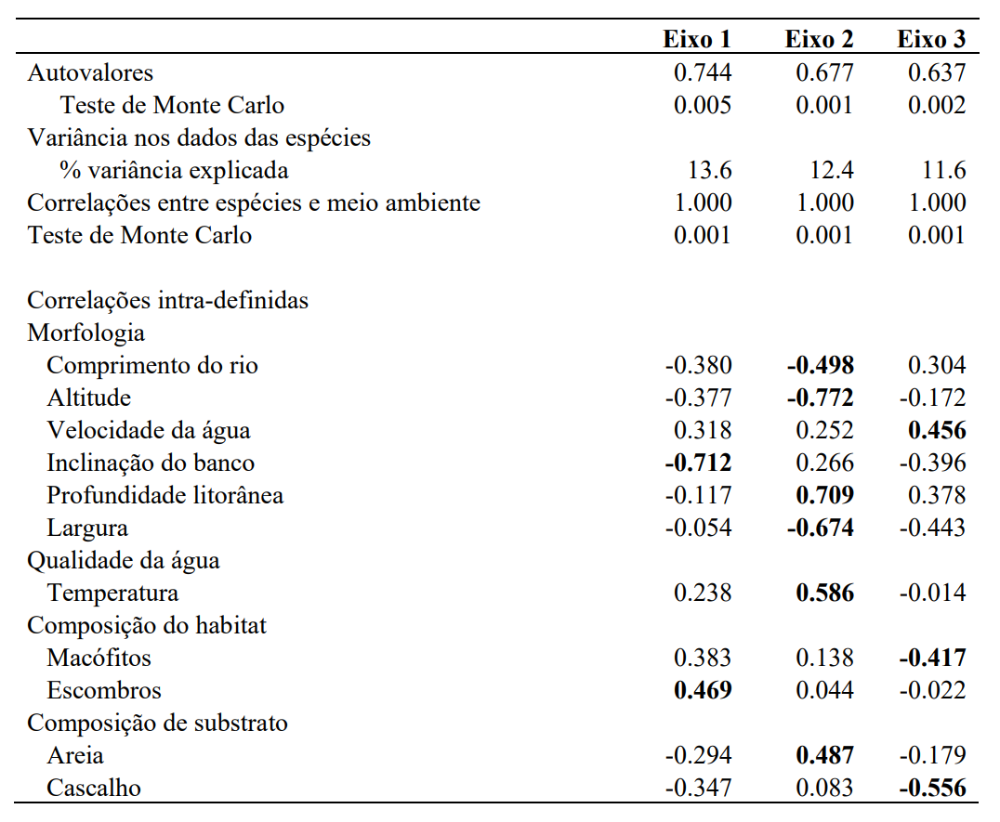
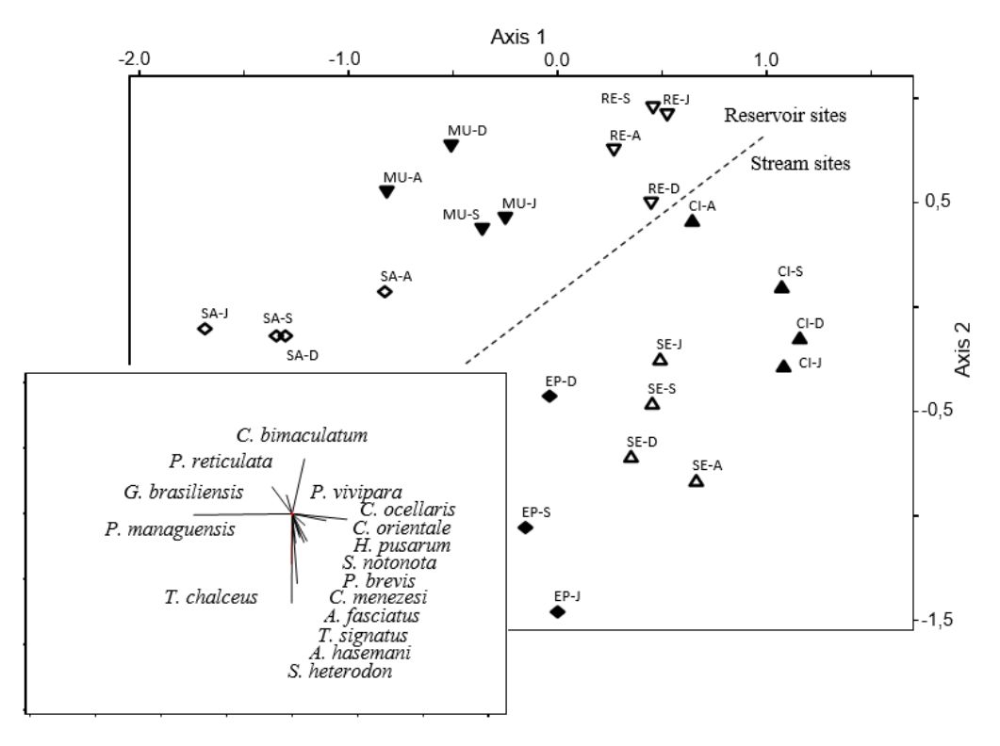
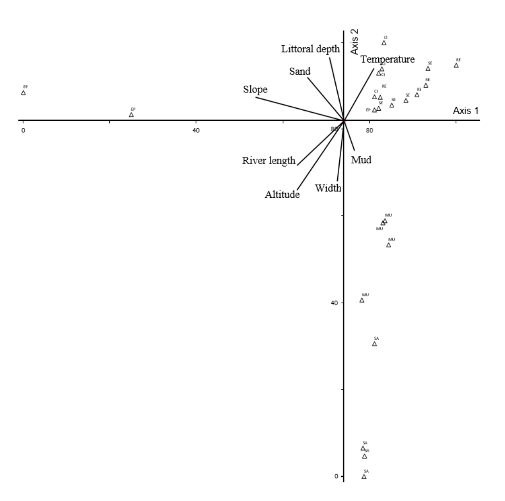

8 Base de dados I - Peixes
Apresentação
Exemplo de conjunto de dados ecológicos do Programa de Pesquisa em Biodiversidade (PPBio) do Semiárido. Ano de 2006. Peixes5.
Autor:
- Prof. Elvio S. F. Medeiros
- Laboratório de Ecologia
- Universidade Estadual da Paraíba
- Campus V, João Pessoa, PB
Para entender a distribuição das espécies de peixes e seu uso de habitat, uma série de variáveis ambientais foram avaliadas como preditores da composição e riqueza da assembleia de peixes em sistemas aquáticos tropicais semiáridos. Nós pesquisamos a composição de espécies de assembleias de peixes em sistemas aquáticos semiáridos e estabelecemos seu grau de associação com a estrutura do habitat aquático. Os locais consistiam em trechos de riachos com fluxo de água superficial, poças temporárias isoladas e reservatórios artificiais (açudes). A amostragem de peixes foi realizada em quatro ocasiões durante as estações chuvosa (abril e junho de 2006) e seca (setembro e dezembro de 2006).
Texto modificado de MEDEIROS et al. (2024): Environmental variables as predictors of fish community composition in semiarid aquatic systems. Acta Limnologica Brasiliensia, 2024, vol. 36, e4. https://doi.org/10.1590/S2179-975X3023. ISSN 2179-975X on-line version. Tradução: Google Translator.
Elvio Sergio Figueredo Medeiros1, Marcio Joaquim da Silva2, Telton Pedro Anselmo Ramos2 e Robson Tamar Costa Ramos1,3
1 Grupo Ecologia de Rios do Semiárido, Universidade Estadual da Paraíba, Depto. de Biologia. Campus V. CEP 58070-450 João Pessoa - PB. Brazil. 2 Universidade Federal do Rio Grande do Norte, Depto. de Biologia, Centro de Biociências, CEP 59078-900 – Natal - RN. 3 Laboratório de Sistemática e Morfologia de Peixes, Universidade Federal da Paraíba, Depto. de Sistemática e Ecologia, CCEN, CEP 58059-900, João Pessoa - PB.
- Autor correspondente: Dr. Elvio Medeiros https://orcid.org/0000-0002-7472-8147. Universidade Estadual da Paraíba, João Pessoa - Paraíba – Brasil - CEP 58.070-450. E-mail: elviomedeiros@servidor.uepb.edu.br
RESUMO
Para compreender a distribuição das espécies de peixes e o uso do habitat, uma série de variáveis ambientais foram avaliadas como preditores da composição de montagem de peixes e riqueza em sistemas aquáticos semiáridos tropicais. Pesquisamos a composição das espécies de conjuntos de peixes em sistemas aquáticos semiáridos e estabelecemos seu grau de associação com a estrutura do habitat aquático. Os locais consistiam em córregos com fluxo de água superficial, piscinas temporárias isoladas e reservatórios feitos pelo homem. A amostragem de peixes foi realizada em quatro ocasiões durante as estações úmidas (abril e junho de 2006) e secas (setembro e dezembro de 2006). A regressão múltipla de tepwise mostrou que as variáveis morfométricas, largura de alcance do córrego, comprimento do córrego e elevação explicaram 75,6% da variação da riqueza dos peixes. Cobertura de macrófitas e vegetação pendente somado ao poder preditivo da equação do modelo, onde o modelo final explicou 86,9% da variação da riqueza dos peixes. A Análise de Correspondência Canônica mostrou uma relação significativa entre os dados de composição do peixe e a morfologia do local (altitude, inclinação do banco e profundidade litorânea). Entre a qualidade da água, a composição do habitat e as variáveis substrato, temperatura, areia e cascalho apresentaram maior correlação com os eixos CCA. Esses resultados indicam que as comunidades de peixes assumem diferentes estruturas e composições em diferentes tipos de habitat, de acordo com a heterogeneidade ambiental nos sistemas aquáticos de terra seca.
Palavras-chave: fluxos intermitentes, reservatórios, conservação, composição de substratos.
8.1 Introdução
Padrões de distribuição de espécies de peixes dentro dos ecossistemas são frequentemente explicados em termos da estrutura do habitat disponível (Junqueira et al., 2016). O habitat é frequentemente relatado como estruturas subaquáticas físicas, como rochas, madeira submersa, macrófitas, algas, etc, e como cobertura (ou proteção aérea) fornecida por características litorâneas, que incluem vegetação costeira ou troncos pendurados nas margens do córrego (Stewart-Koster et al., 2007). Indiscutivelmente, a qualidade e a quantidade do habitat afetam a estrutura e a composição das comunidades de peixes (Vono e Barbosa, 2001), por mudanças nas profundidades da água, velocidade e, consequentemente, tipo substrato, características litorâneas (como vegetação suspensa) e estruturas subaquáticas (Stewart-Koster et al., 2007, Medeiros e Arthington, 2011). Comumente, esses fatores são integrados e os habitats tendem a variar e segregar-se em manchas hierárquicas discretas (Frissell et al., 1986). Apesar disso, o habitat físico dos sistemas aquáticos de água doce em todo o mundo foi degradado ou modificado pelas atividades humanas (Hall et al., 2002). Tal interferência muitas vezes resulta da conversão de sistemas lóticos em lênticos, que mudam a dinâmica do habitat e seu funcionamento (Bunn e Arthington, 2002).
Uma série de estudos relacionam a estrutura da comunidade biótica (número de espécies e distribuição de abundância) e o habitat marginal físico. Tais estudos mostram que tipos de habitat mais complexos fornecem condições favoráveis para os peixes, como substrato de crescimento, locais de desova, bem como alimentos e proteção contra predação (Pusey e Arthington, 2003, Cucherousset et al., 2007, Jeffres et al., 2008) e, portanto, uma maior diversidade de microhabitats associados às características litorâneas tem sido ligada a uma maior diversidade de espécies (Casatti et al., 2012). Como resultado, o fato de diferentes espécies de peixes apresentarem preferências particulares para diferentes tipos de habitat, cria padrões locais de composição de conjuntos de espécies (Junqueira et al., 2016). No entanto, o que leva a presença de espécies a tipos específicos de habitat muitas vezes não é claro.
Nos sistemas de riacho em regiões secas, espera-se que suas amplas variações espaciais e temporais levem a habitats físicos variáveis e, portanto, padrões específicos de estrutura de habitat (Hodges e Magoulick, 2011). Espera-se que a riqueza e a composição dos peixes sigam tais mudanças. Nesses sistemas, o habitat físico é espacial e temporalmente dinâmico devido à interação da morfologia do canal de córrego (por exemplo, largura, profundidade e substrato) e da variabilidade hidrológica (Medeiros et al., 2008, Farias et al., 2012). O estado do habitat físico a um determinado alcance será, portanto, influenciado por fatores que operam em diferentes escalas (Meninos e Thoms, 2006). No nível de captação, geomorfologia e clima afetam hidrologia, deposição de sedimentos, insumos de nutrientes e morfologia do canal (Davies et al., 2000, Mugodo et al., 2006). A nível local, características físicas e químicas da água, o uso da terra e o manejo da terra influenciarão o habitat de alcance do córrego (Hodges e Magoulick, 2011).
É importante ressaltar que a relação entre variáveis de habitat físico e riqueza e distribuição de espécies de peixes tem sido investigada em sistemas lúdicos e loticos tropicais (por exemplo, Vono e Barbosa, 2001, Casatti et al., 2012), mas essa relação para as comunidades de peixes semiáridos permanece amplamente desconhecida. Este trabalho mede a riqueza de peixes e a composição de espécies em diversos habitats aquáticos em córregos intermitentes do Semiárido Brasil, a fim de avaliar a composição das espécies de conjuntos de peixes e estabelecer seu grau de associação com a estrutura do habitat aquático. Temos a hipótese de que a fauna de peixes é irregular com as montagens representando características locais do habitat e que as variáveis ambientais serão elementos importantes explicando a distribuição de peixes.
8.1.1 Desenho Amostral
Este estudo foi realizado na região semiárida brasileira, em bacias hidrográficas que fluem através de uma floresta aberta arbustiva seca decidual (a “Caatinga”). A amplitude térmica é baixa na área de estudo, com médias variando de aproximadamente 25 a 30 °C, e a precipitação média anual varia entre 600 e 1100 mm. As altitudes variam entre 100 e 1000 m (Figura 8.1).

Figura 8.1: Área de estudo mostrando os estados do Rio Grande do Norte (RN), Paraíba (PB), Pernambuco (PE) e Alagoas (AL), principais sistemas fluviais e pontos de amostragem na região semiárida do Brasil. TA, açude Recanto; CP, riacho Cipó; CT, riacho Catureré; PC, riacho Poço da Cruz; MU, açude Mulungu e GU, açude Gurjão.
Duas regiões de importância biológica (Seridó, S e Buíque, B) foram escolhidas e nelas, seis locais ou sítios de coleta (TA, CP, CT, PC, MU, e GU) foram selecionados para representar ambientes Unidades Amostrais de ambientes temporários naturais e artificiais típicos (Figura 8.1 e Figura 8.6).
Os locais consistiam em trechos de riachos (-R) com fluxo de água superficial (durante a estação chuvosa) ou poças temporárias isoladas (durante a estação seca) e reservatórios ou açudes (-A) artificiais criados a partir do represamento de riachos. A amostragem foi realizada durante o ano de 2006 em quatro ocasiões durante as estações chuvosa (abril, 1 e junho, 2) e seca (setembro, 3 e dezembro, 4) (Figura 8.1 e Figura 8.6).
Várias das espécies desse estudo tem grande importância ecológica, como é o caso de Astyanax bimaculatus6 (Figura 8.2), que é muito comum em rios intermitentes e serve de alimento para predadores maiores como a espécie Hoplias malabaricus7 (Figura 8.3).

Figura 8.2: Astyanax bimaculatus, a espécie mais comum da matriz de dados ppbio. Peru, by Eakins, R. Fonte: https://www.fishbase.se/summary/Astianax-bimaculatus.html

Figura 8.3: Hoplias malabaricus, espécie que cresce para se tornar um importante predador. Brazil, by Roselet, F.F.G. Fonte: https://www.fishbase.se/summary/Hoplias-malabaricus.html
Outras espécies como Apareiodon hasemani8 (Figura 8.4 tem importância trófica por estar na base da cadeia alimentar, enquanto espécies da família Loricariidae, como Pseudancistrus genisetiger9 (Figura 8.5), tem importância para taxonomia.

Figura 8.4: Apareiodon sp., importante espécie bentopelágica das bacias dos rios Jaguaribe e Paraíba. Brazil, by Ramos, T.P.A. Fonte: https://www.fishbase.se/summary/Apareiodon-davisi.html

Figura 8.5: Pseudancistrus genisetiger, uma espécie endêmica das bacias hidrográfcas do nordeste. By Medeiros, E.S.F. Fonte: Arquivo pessoal
8.2 Codificação das variáveis
Os arquivos da base de dados do projeto são fornecidos em formato Excel (.xlsx). Por exemplo, o arquivo ppbio06*-peixes.xlsx, traz os dados brutos que serão usados nas análises. A matriz de dados brutos contem mais de 20 localidades (n=linhas ou objetos) em estações do ano diferentes, e cerca de 35 espécies (m=colunas ou atributos), antes de qualquer modificação. Portando é uma matriz bruta. Os valores são contagens de indivíduos, e apresentam uma alta amplitude de variação, portanto, o uso de uma matriz relativizada é sugerido. Nos nomes dos objetos e dos atributos são codificados de acordo com a tabela mostrada na Figura 8.6.

Figura 8.6: Codificação para as variáveis, espécies de peixes, sítios de amostragem e período de amostragem.

Figura 8.7: Tabela 1. Abundância, percentual e frequência de ocorrência (F.O.) de espécies coletadas nos locais de estudo (codificados conforme a Figura 8.6) no semiárido do Brasil. * = Espécies não nativas.
8.3 Amostragem dos dados
As coletas de peixes foram realizadas utilizando-se quatro tipos diferentes de equipamentos de amostragem, durante o dia, e de acordo com Medeiros et al (2010):
uma rede de arrasto curta (4 m de comprimento, 1,5 m de malha de altura e 5 mm),
uma rede de arrasto longa (20 m de comprimento, 2 m de altura e 12 mm de malha),
um conjunto de redes de espera (30 m de comprimento e 1,5 m de altura divididas em três painéis de 10 m de 35, 45 e 55 mm de malha), e
uma rede de tarrafa (2,4 m de altura e 12 mm de malha).
O esforço de captura foi semelhante em ocasiões e locais de amostragem, e medido em horas (para o método passivo), representando o número de horas das redes de espera na água, ou réplicas (para métodos ativos), representando o número de arrastos (para redes de arrasto) ou o número de lançamentos (para a tarrafa) (Medeiros et al., 2010). Os arrastos foram semelhantes em todas as ocasiões e locais de amostragem, sendo aproximadamente 10 m de comprimento para a grande rede de arrasto e 3 a 5 m de comprimento para a rede de arrasto curta.
Os peixes capturados foram eutanasiados em solução de eugenol (Resolução Normativa CONCEA nº 37, de 15.02.2018) fixados em formalia a 10% neutralizada com tetraborato de sódio e posteriormente transferidos para solução de 75% de etanol. Os espécimes foram tratados de acordo com as normas brasileiras de curadoria científica (Malabarba e Reis, 1987) e os peixes foram coletados sob a licença nº 032DIFAP/IBAMA do Instituto Brasileiro do Meio Ambiente e dos Recursos Naturais Renováveis (032DIFAP/IBAMA) de 23 de março de 2006. A triagem e identificação dos espécimes foram realizadas no Laboratório de Morfologia e Taxonomia de Peixes da Universidade Federal da Paraíba. Os espécimes-testemunho foram depositados após identificação na Coleta Ictiológica da mesma instituição.
Além da estrutura da comunidade, a estrutura física do habitat foi medida como,
- variáveis físicas e químicas,
- a morfologia do fluxo,
- composição do substrato, e
- estrutura de habitat.
As variáveis físicas e químicas foram medidas utilizando-se equipamentos portáteis para pH (TECNOPON MPA-210), condutividade (μS/cm) (TECNOPON MCS-150), oxigênio dissolvido (mg/L) e temperatura (°C) (Lutron DO-5510). A transparência (cm) foi medida utilizando-se um disco secchi, e a velocidade da água (m/s) foi estimada usando o método flutuante (Maitland, 1990). O alcance do córrego ou morfologia do local foi avaliado pela largura média (cm) e profundidade (cm) retiradas de três transectos colocados ao longo do alcance do córrego, piscina ou reservatório. A composição do substrato e a estrutura do habitat foram estimadas em 9 a 12 pontos de pesquisa de 1 m2 medidos nas margens (ver Medeiros et al., 2008). Em cada ponto de pesquisa, foram estimadas as proporções (%) da composição de sedimentos (classificados como lama, areia, cascalho e seixos) e estruturas litorâneas e subaquáticas (por exemplo, macrófitas, capim, vegetação submersa, vegetação suspensa, folhiço, algas e galhos) (Pusey et al., 2004, Medeiros et al., 2008).
8.4 Análises estatísticas
Foram realizadas análises estatísticas univariadas sobre riqueza e abundância. A abundância foi padronizada por Unidade de Esforço de Captura (CPUE), onde o número de peixes capturados foi dividido pelo número de horas ou réplicas de cada técnica amostral em cada ocasião amostral e local (a partir de agora denominado abundância CPUE) (Medeiros et al., 2010). A riqueza dos peixes foi corrigida utilizando-se análises rarefação para o número médio de indivíduos de todas as ocasiões de amostragem utilizando PRIMER-e 5.0 (Clarke e Gorley, 2001). A abundância CPUE e a riqueza rarefacionada foram comparadas entre os locais de estudo usando a ANOVA one-way seguida de comparações múltiplas pós-hoc usando o teste HSD de Tukey (α=0,05) (Zar, 1999). A abundância CPUE foi transformada pela raiz quadrada, e as variáveis ambientais foram log10 (x+1) transformadas para aumentar a normalidade e a homogeneidade das variâncias (Sokal e Rohlf, 1969, Maltchik et al., 2010). A correlação entre a riqueza rarefacionada e a abundância CPUE (variáveis dependentes) com a estrutura de habitat (variáveis independentes) foi avaliada utilizando-se a regressão múltipla (RM) com “forward selection”, onde as variáveis são inseridas no modelo com base na significância (probabilidade) do valor F (Sheridan e Lyndall, 2001, Maltchik et al., 2010).
Os padrões de variação na composição da comunidade de peixes entre os locais foram avaliados utilizando-se de Escalonamento Multidimensional Não-Métrico (NMDS), com base na distância relativizada de Bray-Curtis da matriz de dados transformada pelo arco-seno da raiz quadrada. O Procedimento de Permutação Multiresposta (MRPP) (Biondini et al., 1985, McCune e Grace, 2002) foi utilizado para testar a significância das diferenças na composição dos peixes entre locais/ocasiões de amostragem. O valor de “A” é apresentado como medida do grau de homogeneidade entre os grupos em comparação com a expectativa aleatória. Utilizou-se a Análise de Espécies Indicadoras (ISA) para determinar quais espécies foram indicadores significativos dos locais. O Valor Indicativo (IV) para cada espécie foi calculado utilizando-se o método de Dufrene e Legendre (1997). Este valor é testado para significância usando o teste de Monte Carlo (999 permutações). Para estabelecer correlações multivariadas entre a composição dos peixes e as variáveis ambientais, foi realizada uma Análise de Correspondência Canônica (CCA) (McCune e Grace, 2002). A matriz de dados foi centrada e normalizada, e as correlações testadas pelo teste de Monte Carlo com 999 permutações. As variáveis ambientais foram transformadas pelo log10(x+1) (Maltchik et al., 2010). As análises estatísticas (α=0,05) foram realizadas no PC-ORD 7.0 (McCune e Mefford, 1999).
8.5 Discussão
A riqueza das espécies e a composição comunitária dos peixes observados no presente estudo estão de acordo com outros estudos realizados no semiárido do Brasil (Medeiros e Maltchik, 2001a, Medeiros et al., 2010) com a família Characidae sendo a mais representativa em termos de riqueza e abundância. Somado ao fato de que a ordem Characiformes inclui um grande número de espécies de peixes do semiárido brasileiro (Rosa et al., 2003), a maioria das espécies de Characidae observadas no presente estudo são de pequeno porte com taxas relativamente altas de fecundidade e crescimento (Medeiros e Maltchik, 2000, 2001b) e generalistas em hábitos alimentares e no uso de habitat ( Silva et al., 2010, Silva, 2012). Em comparação com outros sistemas de rios secos, os locais de estudo mostraram águas bem oxigenadas, transparentes e relativamente quentes ao longo do período de estudo (ver, por exemplo, Medeiros e Arthington, 2011). A morfologia do alcance do rio variou principalmente de acordo com a natureza do local de estudo, fluxo, piscina isolada ou reservatório, e o habitat aquático era diversificado com uma gama de elementos de habitat disponíveis para colonização pela biota aquática. Os córregos e piscinas de fluxo apresentaram uma maior variedade de elementos de habitat marginal e composição de substratos quando comparados aos reservatórios. Estudos no Semiárido Brasil têm demonstrado que o habitat aquático tende a ser mais rico em córregos, quando comparado aos reservatórios e defende que essa riqueza em estruturas subaquáticas e a natureza mais variável dos córregos intermitentes melhorem a diversidade de peixes (Medeiros et al., 2006, Medeiros et al., 2008).
A regressão múltipla mostrou que o rio atinge morfologia e a estrutura do habitat teve a maioria das variáveis explicando a riqueza dos peixes. O fato de que a morfologia do local é um fator importante que explica a riqueza dos peixes (principalmente largura, comprimento e elevação) indica que esses fatores espaciais estão associados a diferentes faixas de variáveis ambientais que suportam um número de espécies de peixes. Isso é apoiado pelas análises multivariadas que mostraram forte segregação espacial da comunidade de peixes em padrões de montagem espacial. Foi demonstrado que diferentes conjuntos de espécies de peixes exibem preferências por tipos específicos de habitat (Martin-Smith, 1998). No presente estudo, a ausência de fluxo de água na maioria dos locais e a falta de conectividade longitudinal levaram a condições ambientais específicas, segregando assim a comunidade de peixes aos padrões locais de composição das espécies. Portanto, na ausência de fluxo de água, espera-se que a comunidade de peixes assuma diferentes composições entre os tipos de habitat (ou seja, fluxo de vazão de córrego, piscina e reservatório) de acordo com a heterogeneidade ambiental. Isso é ainda mais apoiado pela riqueza significativamente diferente entre os locais, principalmente no que diz respeito aos córregos Seridó (SE) e Escama-Peixe (EP), que apresentaram maior riqueza média. Os resultados de abundância são menos conclusivos, uma vez que a ANOVA não mostrou diferença significativa entre os locais e a regressão múltipla relatou apenas oxigênio dissolvido e vegetação pendente como preditores importantes da abundância de peixes. As abundâncias naturais de peixes nos sistemas aquáticos semiáridos brasileiros variam muito, tanto espacialmente quanto temporalmente (Medeiros et al., 2010). Isso provavelmente está associado ao movimento de indivíduos dentro de pequenos trechos do rio e entre áreas mais rasas e mais profundas em piscinas ou reservatórios maiores durante inundações (Medeiros e Arthington, 2008), bem como com padrões de recrutamento e desova de peixes (Medeiros e Maltchik, 2000).
A importância da vegetação ribeirinha e sua influência no habitat aquático é bem reconhecida (Gregory et al., 1991), pois contribui com sombra e estruturas subaquáticas para refúgio de peixes, bem como locais de desova (Pusey e Arthington, 2003). No presente estudo, variáveis associadas à presença de vegetação ribeirinha foram importantes preditores da riqueza dos peixes (vegetação pendente) e associadas à composição da montagem (detritos lenhosos e temperatura da água). Essas variáveis provavelmente estão contribuindo com condições ambientais adequadas aos peixes, bem como criando embalagens locais de condições ambientais que contribuem com a segregação espacial observada na comunidade de peixes. A presença de macrófitos aquáticos em locais de reservatórios e córregos e sua importância como preditores para a riqueza e composição de espécies também é uma indicação do papel desempenhado pelas estruturas de habitat subaquático na criação de habitats locais espacialmente segregados disponíveis para uso de peixes (Xie et al., 2001). O habitat pode ser visto como um quadro onde variáveis ambientais afetam comunidades biológicas (Southwood, 1977). No entanto, em sistemas hidrologicamente variáveis, a variabilidade do fluxo tem sido sugerida como um grande eixo influenciando no modelo de habitat (Minshall, 1988, Poff e Ward, 1989). Os sistemas aquáticos de terra seca no Brasil são altamente variáveis no que diz respeito à presença e magnitude do fluxo de água (Maltchik e Florin, 2002) e, embora os resultados indiquem que a estrutura do habitat e da morfologia do local são importantes preditores da fauna de peixes, o modelo de habitat é multidimensional (Southwood, 1977) e as diversas variáveis ambientais medidas interagem entre si. Nos sistemas semiáridos do Brasil, a estrutura do habitat está sendo conduzida por muitos componentes em diferentes escalas (Medeiros et al., 2008), onde o papel das características de captação e morfologia local aumentaria na predominância em suas respectivas escalas. Isso destaca a importância da ligação entre a estrutura do habitat e a diversidade biótica no nível do habitat local.
Alterações nos padrões naturais de vazão de água com base na construção de reservatórios e açudes, decorrentes das políticas de gestão atuais dos sistemas semiáridos aquáticos no Brasil, modificam as características hidrológicas dos córregos intermitentes altamente variáveis (Leal et al., 2005, Maltchik e Medeiros, 2006). Com as mudanças na dinâmica natural do fluxo de água vêm também mudanças na estrutura de montagem de macofículas, dinâmica de nutrientes e conectividade longitudinal, todas associadas à conversão de sistemas loticos para lenticos (Bunn e Arthington, 2002). Os dados do presente estudo mostram que essas modificações afetarão as comunidades de peixes (riqueza e composição), uma vez que variáveis altamente associadas ao fluxo de água, como largura de alcance do córrego, cobertura de macrofito, vegetação suspensa e concentração de oxigênio dissolvida foram importantes preditores da montagem de peixes. Portanto, a modificação dos padrões naturais de vazão da água e promoção de condições lenéticas tem o potencial de interferir na fauna de peixes, favorecendo espécies mais oportunistas mais adaptadas a condições de fluxo. Isso é corroborado pelo fato de que os locais dos reservatórios apresentaram menos espécies indicadoras que foram introduzidas principalmente, como Poecilia reticulata e Parachromis managuensis, ou tipicamente lenticas como Geophagus brasiliensis.
O presente estudo mostra que as comunidades de peixes assumem diferentes estruturas e composições em diferentes tipos de habitat, de acordo com a heterogeneidade ambiental associada à natureza do habitat (reservatórios, córregos e piscinas). A riqueza e a composição dos peixes foram influenciadas principalmente por dois conjuntos de variáveis ambientais, sendo morfologia do local e características do habitat. O primeiro conjunto de variáveis relaciona-se com os níveis hierárquicos espaciais de captação, uma vez que o comprimento e a elevação do rio estão tipicamente associados à hierarquia do rio. O segundo conjunto de variáveis é tipicamente local, com estruturas subaquáticas sendo resultado de processos locais como o fluxo de água de alcance do rio e o uso da terra/vegetação ribeirinha.
Apêndices
8.5.1 Tabelas e Figuras
Tabela 1. Abundância, percentual e frequência de ocorrência (F.O.) de espécies coletadas nos locais de estudo (codificados conforme a Figura 8.6) no semiárido do Brasil. * = Espécies não nativas.”
Tabela 2. Variáveis ambientais (average ± SD) coletadas nos locais de estudo no semiárido do Brasil.

Tabela 3. São apresentadas as variáveis ambientais e a composição dos peixes no presente estudo (apenas variáveis correlacionadas com um determinado eixo são mostradas).

Figura 1. Área de estudo mostrando os estados do Rio Grande do Norte (RN), Paraíba (PB), Pernambuco (PE) e Alagoas (AL), principais sistemas fluviais e locais de amostragem no semiárido do Brasil. TA, açude Recanto; CP, riacho Cipó; CT, riacho Catureré; PC, riacho Poço da Cruz; MU, açude Mulungu e GU, açude Gurjão.
Figura 2. Os resultados da NMDS para a composição dos peixes em todo o estudo chegam ao semiárido do Brasil. Vetores (caixa de entrada) mostram taxa correlacionada (r2 > 0,2) com amostras em espaço de ordenação. As letras após os códigos do site indicam ocasião de amostragem (A=Abril, J=Junho, S=Setembro e D=Dezembro).

Figura 3. Biplot de CCA mostrando a composição de conjuntos de peixes nos locais e ocasiões de amostragem () e as variáveis ambientais explicativas definidas pela CCA.
